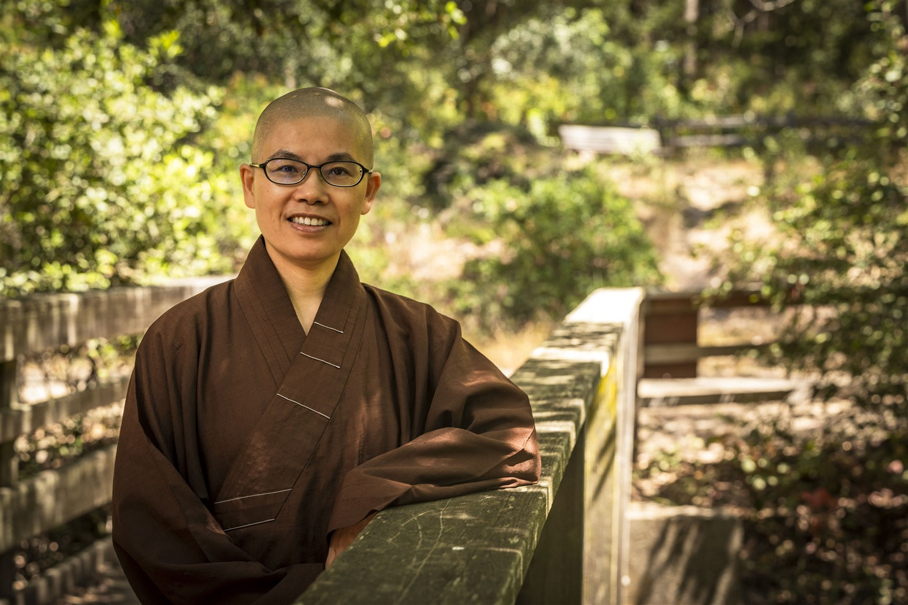

Shifu Shuman
Free from attachment. Free from fear.
Venerable Jian E — Buddhist nun, scholar of religion, and Dharma teacher. First time here? Pick one door below.
About Shifu Shuman

Shifu Shuman (Venerable Jian E) was ordained in 1995 under the late Master Wei Chueh and received the full precepts.
Education
- PhD in Religious Studies, Northwestern University, USA
- MA in Religion, Columbia University, USA
- BA in German, Fu Jen Catholic University, Taiwan
Present & past
- Lecturer, Taipei Buddha Education Foundation (present)
- Former abbess of several monasteries in the USA and Taiwan
- Former director, Prajna Sutra Institute (Puli)
- Former visiting researcher, Academia Sinica (Taipei)
Aspiration
Tending one bodhi garden, without clinging to any single tree.
May this merit extend to all; may we and all beings together realize Buddhahood.
Books

Free from Attachment, Free from Fear
The English edition of Venerable Jian E's Bu Zaihu, Bu Yao Pa — over thirty true stories about the ease of letting go and the courage of taking on. Kindle edition (USD 5.99, purchase link updating); paperback (NTD 250) — please contact us.
Teachings in English
Full-length lectures with Chinese context, and short clips with English titles on the channel.
Visit & Connect
Join a retreat or Dharma gathering, or write to us.
Dharma events calendarbuddhaworld2000@gmail.comLINE official account